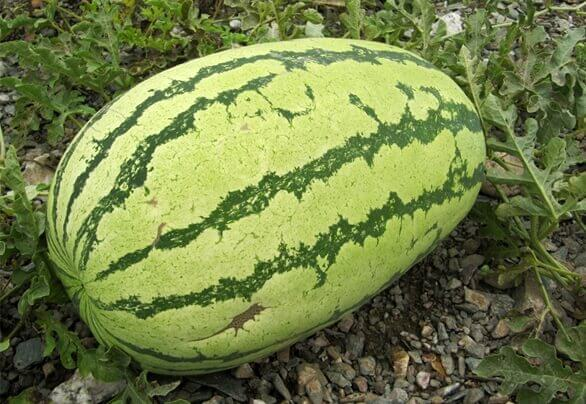
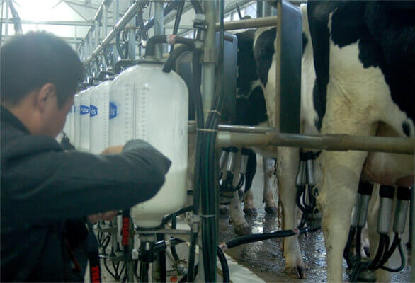
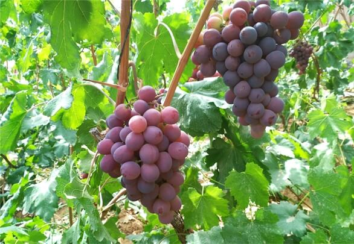

奶牛养殖场位于沙坡头区沙漠设施蔬菜基地以北，占地总面积1500亩，项目总计划投资5.5亿元，用4年时间建成存栏奶牛1万头的现代标准化规模奶牛养殖场。一期2000头奶牛养殖场已于2012年8月份建成，预计奶牛存栏2000头，其中，生产奶牛1400头，年产鲜奶9800吨。2013年完成建设二期占地800亩，存栏3000头的标准化奶牛养殖场，并于2014年开始建设三期占地1000亩，存栏5000头的标准化奶牛养殖场，全部工程预计在2015年底全部完工。
硒砂瓜又被称为“石头缝里长出的西瓜”，主产于宁夏中卫市环香山地区，故又称为“香山硒砂瓜”。“早穿皮袄午披纱，晚上围着火炉吃西瓜”，这是宁夏中卫市地区的真实写照。在此恶劣环境下，中卫农民摸索出了一套旱地压砂种瓜的方法。中卫发展硒砂瓜具有独特优势。由于昼夜温差大，七、八月份这里的最高温差可达五六十度，土壤富含氨基酸和锌、钙、钾、硒等微量元素，中卫硒砂瓜甘甜如蜜，营养丰富。种植地处于荒漠化地区，远离城市和工业，且种植过程不使用农药，硒砂瓜符合现代人绿色环保的要求。
我公司于2012年开始，在中卫市沙坡头区吊坡梁沙漠地带开始建设中国第一家沙漠中的奶牛养殖场，截止目前，5000头高标准奶牛养殖基地已建成投产，预计2015年全部工程将完工，达到万头奶牛养殖场的标准。因为地处沙漠，周边无化学污染源，加上合理科学健康的奶牛饲料配方，使得我公司生产的生鲜牛乳是无污染的健康绿色食品。
有机葡萄必须是连续3年采用天然的物质作肥料（如海藻、牲口粪便和植物混合肥料），并以人工采收。我公司引进北冰红、赤霞珠等酿酒葡萄品种，建成2000亩酿酒葡萄示范基地，其产品通过国家中绿华夏有机食品认证中心认证，获得有机转换食品认证证书。公司计划建设沐沙酒庄，打造休闲、娱乐为一体的高端会所，在沙漠里建立一个绿色的“世外桃源”。